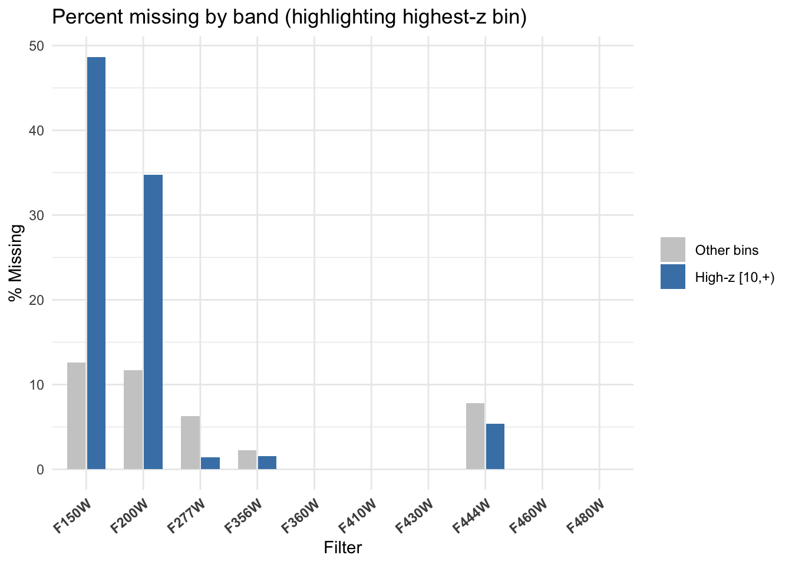
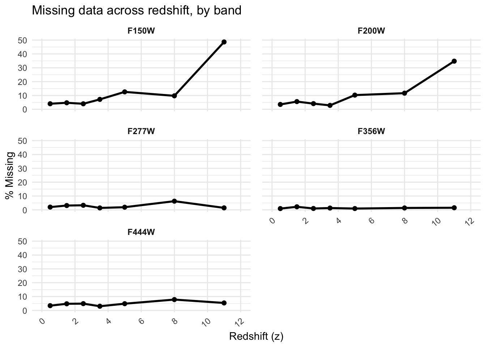

Code
library(tidyverse)
library(viridis)
library(hexbin)
library(naniar)
library(ggridges)
library(scales)
library(naniar)
library(dplyr)
library(tidyr)
library(ggplot2)
library(stringr)
library(hexbin)
library(broom)
library(tibble)library(tidyverse)
library(viridis)
library(hexbin)
library(naniar)
library(ggridges)
library(scales)
library(naniar)
library(dplyr)
library(tidyr)
library(ggplot2)
library(stringr)
library(hexbin)
library(broom)
library(tibble)I used a public data catalog called the UNCOVER DR3 SUPER which is used to describe the Abell 2744 field. It is collected by the UNCOVER collaboration using James Webb Space Telescope. I have tried to understand the data with some question prompts:
What is the data about? The Abell 2744 field is a huge galaxy cluster in the Sculptor Constellation known as the Pandora’s Cluster. DR3 Photometry has over 74000 sources that are publicly archived, and measures different sky positions or brightness(RA, Dec), redshifts (spectroscopic z_spec, photometric estimates with uncertainties like z025/z975 and fit quality z_phot_chi2), fluxes (f_ variables), errors (e_ variables), and AB magnitudes (m_ variables) across various filters. It combines NIRCam mosaics with point-spread-function-matched apertures. A PSF( Point Spread Function) is a 2D distribution of light in a telescopic focal plane. The data catalog is released as a FITS (binary table) and a mirrored CSV/ECSV, which I downloaded from the UNCOVER github repo. I will use the CSV for the EDAV implementation.
Why does it exist? We want a measurement (PSF-matched, multi-filter comparison) of sources so that we can study galaxies.
What are we using the data for? To observe age through trends of brightness vs redshift, evolution of galaxies, the treatment of missing data, spatial non-uniformity, and a categorization of stars vs non stars.
Challenges with Missing values- In real world, the problems encountered with this kind of data is that some objects are too faint in some filters (brightness undetected), and there is a lot of measurement uncertainty, so they end up as missing values. Also at very high redshifts, certain filters drop because even in JWST, they don’t capture light from very old galaxies.
The significant variables in this data:
Position in the sky- ra, dec
Redshift and Uncertainty- spectroscopic redshift (z_spec), Uncertainty width (z025, z975), photo z fit check (z_phot_chi2),Derived redshift bins (z_bin).
Filters - f variables
Errors- e variables
Magnitude (AB) - m variables.
In the below plots I will analyze the most optimal filters for observing by comparing different filters with different sets of missing data.
csv_path <- "/Users/base/Desktop/Columbia Documents/Courswork/EDAV/Project/uncover_dr3_super_catalog.csv"
gal_raw <- readr::read_csv(csv_path, show_col_types = FALSE)
head(gal_raw, width = 120)# A tibble: 6 × 156
id x y ra dec ebv_mw `faper_f277w+f356w+f444w`
<dbl> <dbl> <dbl> <dbl> <dbl> <dbl> <dbl>
1 1 4170. 0.804 3.62 -30.5 0.0107 NA
2 2 4191. 2.50 3.62 -30.5 0.0107 NA
3 3 5174. 1.55 3.61 -30.5 0.0109 NA
4 4 5250. 2.68 3.61 -30.5 0.0109 NA
5 5 3820. 1.53 3.63 -30.5 0.0107 NA
6 6 4862. 2.49 3.62 -30.5 0.0109 NA
# ℹ 149 more variables: `eaper_f277w+f356w+f444w` <dbl>,
# `fauto_f277w+f356w+f444w` <dbl>, `w_f277w+f356w+f444w` <dbl>,
# f_f435w <dbl>, e_f435w <dbl>, w_f435w <dbl>, f_f606w <dbl>, e_f606w <dbl>,
# w_f606w <dbl>, f_f814w <dbl>, e_f814w <dbl>, w_f814w <dbl>, f_f070w <dbl>,
# e_f070w <dbl>, w_f070w <dbl>, f_f090w <dbl>, e_f090w <dbl>, w_f090w <dbl>,
# f_f105w <dbl>, e_f105w <dbl>, w_f105w <dbl>, f_f115w <dbl>, e_f115w <dbl>,
# w_f115w <dbl>, f_f125w <dbl>, e_f125w <dbl>, w_f125w <dbl>, …z_candidates <- c("z", "z_phot", "z_best", "z_eazy", "photoz", "z_spec")
z_col <- intersect(z_candidates, names(gal_raw))[1]
if (is.na(z_col)) stop("No redshift column found. Look for one of: ",
paste(z_candidates, collapse = ", "))
message("Using redshift column: ", z_col)
gal <- gal_raw %>%
mutate(
#standardizing z
z = as.numeric(.data[[z_col]]),
z = ifelse(is.finite(z) & z >= 0, z, NA_real_),
#Redshift bins
z_bin = cut(
z,
breaks = c(0, 1, 2, 3, 4, 6, 10, Inf),
labels = c("[0,1)","[1,2)","[2,3)","[3,4)","[4,6)","[6,10)","[10,+)"),
right = FALSE
)
)Let us check if missing data increases as we go higher in redshift?
mag_from_uJy <- function(f) {
f <- suppressWarnings(as.numeric(f))#if column is in character
out <- rep(NA_real_, length(f))
idx <- is.finite(f) & f > 0#positive fluxes
out[idx] <- 23.9 - 2.5 * log10(f[idx])
out
}
bands <- c("f150w","f200w","f277w","f356w","f360w",
"f410w","f430w","f444w","f460w","f480w")
for (b in bands) {
fcol <- paste0("f_", b)
mcol <- paste0("m_", b)
if (fcol %in% names(gal) && !(mcol %in% names(gal))) {
gal[[mcol]] <- mag_from_uJy(gal[[fcol]])
}
}
#Redshift bins
gal <- gal %>%
mutate(z_bin = cut(
z, breaks = c(0,1,2,3,4,6,10, Inf),
labels = c("[0,1)","[1,2)","[2,3)","[3,4)","[4,6)","[6,10)","[10,+)"),
right = FALSE
))
mag_cols <- intersect(paste0("m_", bands), names(gal))
#Missing data
library(dplyr); library(tidyr); library(ggplot2)
miss_long <- gal %>%
transmute(z_bin, across(all_of(mag_cols), ~ !is.finite(.x), .names = "NA_{col}")) %>%
pivot_longer(-z_bin, names_to = "band", values_to = "is_na") %>%
mutate(
band = sub("^NA_m_", "", band),
band = toupper(sub("^f", "F", sub("^m_", "", band)))
) %>%
group_by(z_bin, band) %>%
summarise(pct_missing = mean(is_na) * 100, .groups = "drop") %>%
filter(!is.na(z_bin))
miss_hl <- miss_long %>% mutate(is_high = z_bin == "[10,+)")
band_labels <- toupper(sub("^f", "F", bands))
ggplot(miss_hl, aes(band, pct_missing, fill = is_high)) +
geom_col(position = position_dodge(width = 0.7), width = 0.65) +
scale_x_discrete(limits = band_labels, drop = FALSE) +
scale_fill_manual(values = c(`FALSE` = "grey80", `TRUE` = "steelblue"),
labels = c("Other bins", "High-z [10,+)"),
name = NULL) +
labs(title = "Percent missing by band (highlighting highest-z bin)",
x = "Filter", y = "% Missing") +
theme_minimal() +
theme(axis.text.x = element_text(angle = 40, hjust = 1, face = "bold"))
Observations:
1.The blue bars show percentage of missing data at high redshift, and the grey bars show percentage of missing data at lower redshift. This fits perfectly with the astrological concept of galaxies becoming harder to observe with increasing redshift (cosmic time).
2.The highlighted bars show higher missing data for the shorter wavelength JWST filters like F150W and F200W with the highest z redshift.
3.For some filters there is no missing data.
4.For the f277w filter, the missing data percentage is less at higher redshifts.
So, how does the missing data increase or decrease with redshift?
miss_cont <- miss_long %>%
mutate(
z_mid = recode(as.character(z_bin),
"[0,1)" = 0.5, "[1,2)" = 1.5, "[2,3)" = 2.5,
"[3,4)" = 3.5, "[4,6)" = 5, "[6,10)" = 8,
"[10,+)" = 11
)
)
brks <- c(0,2,4,6,8,10,12)
ggplot(miss_cont, aes(x = z_mid, y = pct_missing, group = 1)) +
geom_line(linewidth = 1) +
geom_point(size = 1.8) +
facet_wrap(~ band, ncol = 2) +
scale_x_continuous(breaks = brks, limits = c(0, 12), minor_breaks = NULL) +
labs(title = "Missing data across redshift, by band",
x = "Redshift (z)", y = "% Missing") +
theme_minimal() +
theme(panel.spacing = unit(12, "pt"),
axis.text.x = element_text(angle = 40, hjust = 1),
strip.text = element_text(face = "bold"))
Observations:
I can more clearly observe here that at lower values of redshift for a shorter wavelength filters (F150W and F200W), the missing data is modest. However as the redshift becomes very high (10+), these short wavelength filters, that are looking at bluer rest-frame light and is thus suppressing them. So many galaxies are not getting detected.
In longer wavelength bands (F444W), the rise of missing data with redshift is minimal because longer wavelength filters are more effective and usable. As we travel to older cosmic times, the bluer wavelength filters drop out lots of undetectable points while the redder wavelength filters stay on longer.
Therefore, based on the above two plots, I can conclude that the low + no impact filters are perfect for plotting/modelling.
For Data Wrangling:
#Standardizing redshift
z_candidates <- c("z", "z_phot", "z_best", "z_eazy", "photoz", "z_spec")
z_col <- intersect(z_candidates, names(gal_raw))[1]
if (is.na(z_col)) {
stop("No redshift column found. Look for one of: ",
paste(z_candidates, collapse = ", "))
}
message("Using redshift column: ", z_col)
gal <- gal_raw %>%
mutate(
z = as.numeric(.data[[z_col]]),
z = ifelse(is.finite(z) & z >= 0, z, NA_real_),
z_bin = cut(
z,
breaks = c(0, 1, 2, 3, 4, 6, 10, Inf),
labels = c("[0,1)","[1,2)","[2,3)","[3,4)","[4,6)","[6,10)","[10,+)"),
right = FALSE
)
)
#Magnitude for filter bands
mag_from_uJy <- function(f) {
f <- suppressWarnings(as.numeric(f))
out <- rep(NA_real_, length(f))
idx <- is.finite(f) & f > 0
out[idx] <- 23.9 - 2.5 * log10(f[idx])
out
}
bands <- c("f150w","f200w","f277w","f356w","f360w",
"f410w","f430w","f444w","f460w","f480w")
for (b in bands) {
fcol <- paste0("f_", b)
mcol <- paste0("m_", b)
if (fcol %in% names(gal) && !(mcol %in% names(gal))) {
gal[[mcol]] <- mag_from_uJy(gal[[fcol]])
}
}
mag_cols <- intersect(paste0("m_", bands), names(gal))
#Choosing the optimal filters from missing data analysis
safe_filters_target <- c("F277W", "F356W", "F444W", "F480W")
#Column check
candidate_safe_mag_cols <- paste0("m_", tolower(safe_filters_target))
safe_mag_cols <- intersect(candidate_safe_mag_cols, names(gal))
if (length(safe_mag_cols) == 0) {
stop("None of the target safe filters are present as magnitude columns:",
paste(safe_filters_target, collapse = ", "))
}
safe_filters <- toupper(sub("^m_f", "F", safe_mag_cols))
message("Using safe filters: ", paste(safe_filters, collapse = ", "))
#Clean analysis df
gal_clean <- gal %>%
mutate(
n_safe = rowSums(across(all_of(safe_mag_cols), ~ is.finite(.))),
has_safe = n_safe > 0
) %>%
filter(has_safe, !is.na(z))
gal_clean <- gal_clean %>%
mutate(
C1_F277_F356 = m_f277w - m_f356w,
C2_F356_F444 = m_f356w - m_f444w
)
#Long format magnitudes
gal_long_mag <- gal_clean %>%
select(any_of(c("id", "tile", "class")), z, z_bin, all_of(safe_mag_cols)) %>%
pivot_longer(
cols = all_of(safe_mag_cols),
names_to = "band_raw",
values_to = "mag"
) %>%
mutate(
band = toupper(sub("^m_f", "F", band_raw))
)
#Visible output
wrangle_summary <- dplyr::tibble(
stage = c("Raw catalog", "After z + mags", "After safe-filter & z filter"),
n_rows = c(nrow(gal_raw), nrow(gal), nrow(gal_clean))
)
knitr::kable(
wrangle_summary,
caption = "Row counts at each data-wrangling stage"
)| stage | n_rows |
|---|---|
| Raw catalog | 74020 |
| After z + mags | 74020 |
| After safe-filter & z filter | 71256 |
safe_filter_tbl <- dplyr::tibble(
safe_filters = paste(safe_filters, collapse = ", "),
n_safe_filters = length(safe_filters)
)
knitr::kable(
safe_filter_tbl,
caption = "Safe / low-missing filters available in this catalog"
)| safe_filters | n_safe_filters |
|---|---|
| F277W, F356W, F444W | 1 |
#Glimpse of the cleaned table for the used filters
gal_clean %>%
dplyr::select(z, z_bin, all_of(safe_mag_cols)) %>%
head(8)# A tibble: 8 × 5
z z_bin m_f277w m_f356w m_f444w
<dbl> <fct> <dbl> <dbl> <dbl>
1 0.982 [0,1) 24.5 24.1 24.0
2 1.86 [1,2) 24.8 24.8 24.9
3 5.15 [4,6) 24.6 25.4 25.2
4 0.173 [0,1) 23.6 23.5 23.7
5 5.66 [4,6) 25.2 24.2 24.7
6 6.59 [6,10) 24.0 23.5 24.0
7 2.30 [2,3) 22.7 22.6 22.5
8 0.427 [0,1) 22.7 22.9 23.1dir.create("data/clean", recursive = TRUE, showWarnings = FALSE)
saveRDS(
list(
gal_clean = gal_clean,
gal_long_mag = gal_long_mag,
safe_mag_cols = safe_mag_cols
),
"data/clean/gal_clean.rds"
)